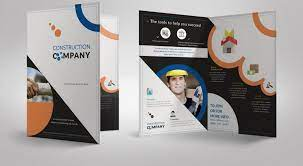

Browsur

Brosur bersifat umum karena disajikan untuk khalayak ramai untuk mengintepretasikan produk atau suatu layanan yang ingin disebarkan kekhalayak umum.pengertiannya brosur adalah bahan informasi tertulis mengenai suatu masalah yang disusun
secara bersistem. cetakan yg hanya terdiri atas beberapa halaman dan dilipat tanpa dijilid.
Brosur adalah suatu media yang digunakan oleh perusahaan atau organisasi tertentu untuk menawarkan suatu produk, layanan atau program kepada masyarakat umum. Brosur ini diterbitkan secara tidak berkala “tidak reguler” dan hanya terdiri
dari beberapa halaman saja “sedikit halamannya”, brosur juga umumnya memiliki sampul tetapi tidak berjilid.
Desain Produk
Pengertian Desain Produk adalah rangkaian usaha untuk mempelajari dan merencanakan benda pakai yang fungsional, ergonomis dan estetis sehingga menjadi lebih bernilai dan bermanfaat bagi penggunanya (konsumen).
Bahkan dalam bahasa inggris, sebetulnya bidang studi ini disebut dengan Industrial Design. Namun istilah tersebut tidak dapat diterjemahkan mentah-mentah menjadi desain industri, karena yang didesain bukanlah industrinya melainkan produknya
(Adhi Nugraha,1989).
UI/UX
User Interface (UI) User Interface Design atau yang bahasa Indonesianya itu Desain Antarmuka Pengguna adalah : Desain antarmuka untuk mesin dan perangkat lunak, seperti komputer, peralatan rumah tangga, perangkat mobile, dan perangkat
elektronik lainnya, dengan fokus pada memaksimalkan pengalaman pengguna.
Desain Web

Desain web itu penting. Tak kurang dari 38% pengguna internet tak ingin kembali ke website yang memiliki desain kurang menarik. Artinya, memiliki desain website terbaik berpotensi meningkatkan jumlah pengunjung website Anda. Membuat
sebuah desain yang baik tidaklah mudah, kecuali Anda menerapkan langkah yang tepat. Apa saja langkahnya? Artikel kami kali ini akan menjelaskan cara desain web dalam 15 langkah mulai perencanaan hingga penyempurnaan desain.
Desain Aplikasi
Desain aplikasi adalah proses yang digunakan di daerah siklus hidup prototyping dari Metode Pengembangan Sistem Dinamis (DSDM) untuk mengumpulkan kebutuhan bisnis saat mengembangkan sistem informasi baru untuk sebuah perusahaan. Desain
aplikasi adalah proses yang digunakan di daerah siklus hidup prototyping dari Metode Pengembangan Sistem Dinamis (DSDM) untuk mengumpulkan kebutuhan bisnis saat mengembangkan sistem informasi baru untuk sebuah perusahaan.